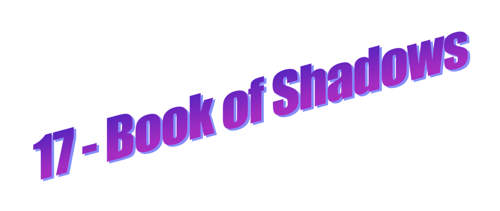
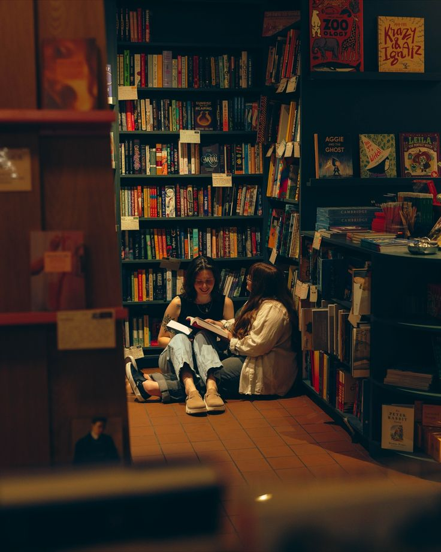

 Tu feuillettes le livre. Au lieu de tomber sur des sorts ou des
rituels, tu découvres des passages sur la vie quotidienne de
l'autrice : ses études, son métier d'avocate, les attentes
sociales, la compétition permanente.
Tu feuillettes le livre. Au lieu de tomber sur des sorts ou des
rituels, tu découvres des passages sur la vie quotidienne de
l'autrice : ses études, son métier d'avocate, les attentes
sociales, la compétition permanente.
Tu es un peu déçue. Tu t'attendais à de la magie. A la place, tu trouves... du travail.
Puis tu tombes sur une phrase qui te percute :
“I needed to learn the wisdom of my body and my heart, not just the wisdom of my mind. […] My body was not just some biological machine designed to carry my consciousness around. I was beginning to understand that, contrary to a culture which called the body sinful, it had intrinsic value, intelligence, and spiritual wisdom to offer me, if I would honor it.”
(J’avais besoin d’apprendre la sagesse de mon corps et de mon cœur, et pas seulement celle de mon esprit. […] Mon corps n’était pas qu’une simple machine biologique conçue pour transporter ma conscience. Je commençais à comprendre que, contrairement à une culture qui le considérait comme pécheur, il possédait une valeur intrinsèque, une intelligence et une sagesse spirituelle à m’offrir, si je voulais bien l’honorer.)
Tu as besoin d'une minute pour assimiler cette phrase. Tu
t'assieds par terre sur le parquet en chevrons, et Emma t'accompagne
dans ton élan, s'agenouillant à tes côtés.
- Tu as l'air
ailleurs, remarque Emma après quelques secondes.
Tu sursautes presque. Tu n'avais pas réalisé que tu fixais la même phrase depuis plusieurs minutes.
- Je réfléchissais.
- À quoi ?
Tu hésites. La réponse te paraît à la fois trop personnelle et parfaitement anodine.
- À cette histoire de corps.
Emma tourne légèrement la tête.
- Dans la citation ?
Tu acquiesces.
- Je ne sais pas. J'ai l'impression que je vis beaucoup dans ma tête.
Un sourire ourle ses lèvres maquillées.
- Seulement l'impression ?
Tu la regardes avec une moue faussement offensée.
- Merci.
- De rien.
Un ange passe.

- Tu sais, ce n'est pas forcément un défaut... Mais parfois ça ressemble à une cachette.
La remarque te surprend davantage que tu ne voudrais l'admettre. Emma s'est rapprochée sans que tu t'en aperçoives. Son épaule frôle presque la tienne.
- Tu n'aimes pas beaucoup qu'on entre dans ton espace.
- C'est faux.
- C'est complètement vrai.
Tu t'apprêtes à protester puis abandonnes...
- Peut-être.
- Même avec les gens que tu apprécies.
Tu baisses les yeux vers ta page.
- Je n'y pense pas vraiment.
- Justement.
Sa voix n'a rien d'accusateur. Elle semble simplement curieuse.
- Est-ce que ça t'a toujours fait ça ?
La question reste en suspens comme un point d'interrogation
flottant dans l'air saturé d'encens. Tu pourrais répondre que tu
n'en sais rien, ou plaisanter pour changer de sujet. Surtout que
cette conversation aurait pu te mettre très mal à l'aise.
Normalement tu te serais déjà terrée six pieds sous terre à ce
stade de votre échange. Mais il y a quelque chose de différent dans
ce lieu, comme s'il permettait aux langues de se délier, et à tes
réflexes de protection de se diluer dans le chant des fontaines zen
et des carillons. Et quelque chose dans la douceur d'Emma te donne
envie de lui offrir une réponse honnête.
- Je crois que j'ai toujours été très distante.
Elle hoche la tête et poursuit ses réponses lapidaires qui visent toujours plus justes.
- Ça doit être fatigant.
- Pourquoi ?
- De devoir tout filtrer avant de laisser quelqu'un s'approcher.
Tu restes silencieuse. Emma tend la main et remet machinalement
une mèche de cheveux derrière ton oreille. Mais il te faut une
seconde pour intégrer ce qu'elle vient de faire.
- Tu vois ?
- Quoi ?
- Tu te figes.
Tu éclates de rire malgré toi.
- Je ne me fige pas ! Protestes-tu.
- Si.
- À peine.
- Comme un petit animal qui vérifie qu'il n'y a pas de piège. Tu sais, ces petits rongeurs stressés comme tout ?
- C'est extrêmement vexant.
- Et très mignon.
Cette fois, c'est toi qui détournes le regard. Emma sourit sans
insister. Pour la première fois depuis longtemps, tu te demandes si
la distance que tu maintiens avec les autres est vraiment une
protection, ou simplement une habitude devenue invisible.
Tu payes le livre et la vendeuse vous gratifie d'un chaleureux sourire lorsqu'elle te rend ton paquet. Aude et Soline batifolent dans les escaliers de princesse de l'immeuble, et Emma rit gaiement de leurs facéties.Tu sors le cœur plus léger de la boutique.
Tu prends le bus pour rentrer chez toi : page 9.